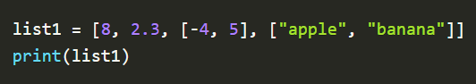
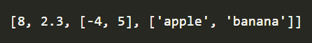
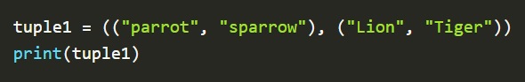
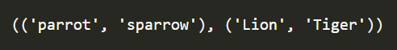
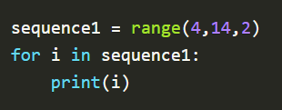
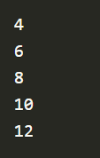

PYTHON DATATYPES
- Numeric data: int, float, complex
- int: 3, -8, 0
- float: 7.349, -9.0, 0.0000001
- complex: 6 + 2i
- Text data: str
- Boolean data:
- Sequenced data: list, tuple, range
- LIST : A list is an ordered collection of data with elements separated by a comma and enclosed within square brackets. Lists are mutable and can be modified after creation.
- TUPLE: A tuple is an ordered collection of data with elements separated by a comma and enclosed within parentheses. Tuples are immutable and can not be modified after creation.
- RANGE: returns a sequence of numbers as specified by the user. If not specified by the user then it starts from 0 by default and increments by 1.
Data type specifies the type of value a variable requires to do various operations without causing an error. By default, python provides the following built-in data types:
str: “Hello World!!!”, “Python Programming”
Boolean data consists of values True or False.
Example:

Output :

Example :

Output :

Example:

Output :
